這一篇主要在示範如何在 整合開發環境(Integrated Development Environment) 中，依據 ESLint 的規則設定，自動修復及格式化文件；並且於簽入 Git 版控之前，預先檢查 ESLINT 規則
ESLINT 簡介
關於 ESLint 的介紹可以直接瀏覽網站說明
大致上就是能夠在開發程式的時候，提示你一些語法上的錯誤、或者是怎麼寫會比較好
規則的設定，在官網就直接分成幾個區塊說明
- Possible Errors
- Best Practices
- Variables
- Node.js and CommonJS
- Stylistic Issues
- ECMAScript 6
這些都可以自行定義是否啟用，整體來說就是一個協助你維持程式碼品質的工具
所以第一步，要使用 ESLINT，就需要先在專案目錄安裝並進行設定
1 | install eslint |
ESLint 設定範例及各 IDE 測試
範例使用到的規則可參考
ESLint 設定範例
在專案根目錄的.eslintrc檔案進行設定如下：
1 | { |
Environments (env)
表示程式碼運行的環境，通常這些環境都會有對應的一組全域變數；例如在browser環境下，預設就會有window、document可以用；而jest，也會預設該測是套件的一些全域變數是允許使用的，詳細清單可參考官網說明
1 | "env": { |
extends
撰寫 React 的 ESlint 設定，還需要安裝依賴的套件ESLint-plugin-React，再加上 ESLint 本身，所以就需要安裝下面這兩個套件
1 | npm install eslint --save-dev |
因為要使用預設的官方推薦設定，以及開發 React，因此在 ESLint 設定要加上這一段來繼承這些設定
1 | "extends": ["eslint:recommended", "plugin:react/recommended"], |
eslint:recommended源自於ESLint套件plugin:react/recommended源自於eslint-plugin-react套件至於
react-hook，這裡沒有繼承plugin:react-hooks/recommended，而是在rule區段直接宣告 hook 的兩個規則
plugins
ESLint 所使用的外掛，可省略eslint-plugin-的前綴
1 | "plugins": ["react", "react-hooks"], |
因此實際上專案的 ESLint 設定，使用了這兩個套件
之所以要用這兩個套件，就是因為我們需要擴充 ESLint 的規則，讓他支援 React、還有 React Hook 的開發
parserOptions
1 | "parserOptions": { |
這一段的意思是說
- 使用 EMCAScript 7 版本
- 使用 module
- 啟用
jsx
parser
1 | "parser": "babel-eslint", |
ESLint 經由這個解析器，來分析我們的程式與法；如果有使用babel，解析器就使用babel-eslint
globals
這個區段代表的是全域變數的部分，如果想要在程式碼中調用全域變數，就可以加在這裡。後方參數參照官網說明，因為歷史因素，採用 true 等價於writable；false 則是等價於readonly；這表示的是該全域變數是否允許被重新設定。
1 | "globals": { |
rules
規則區段，族繁不及備載，僅節錄部分示範
1 | "rules": { |
針對react-hooks/rules-of-hooks這一條規則，如果發生的時候，提示為error；另一條則提示warn
可選的值為
- error：錯誤
- warn：警告
- off：忽略
ESLint 規則設定
因為我們的 Rule 設定是
1 | "no-extra-parens": "error", |
所以故意在下列的程式碼埋入不合規則的語法，預期ＩＤＥ應該會提示我們發生錯誤
1 | let a = 1; |
先透過指令測試一下
1 | eslint step1.js |
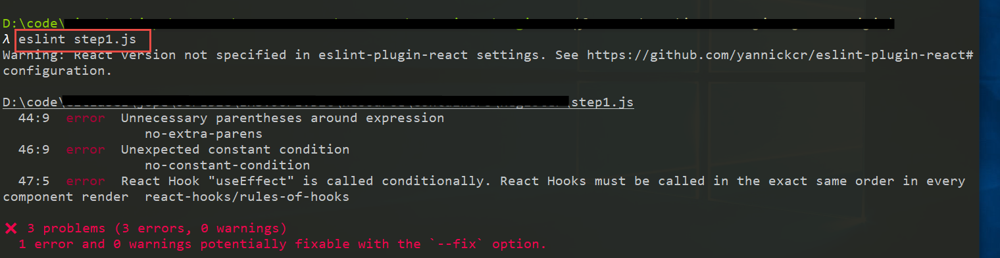
ESLint IDE Support
在目前 IDE 裡面，個人最喜歡的順序如下
- Rider (需收費)
- VSCode (免費)
- VS2019 (社群版免費)
一開始學習ASP.Net都是使用 VS2019 來開發 C#程式，或多或少都會碰到 javascript 檔案的開發需求，但 Visual Studio 系列其實用起來很難用，因此我都是以 VS2019 開發 C#、js 及 HTML 都是由 VSCode 處理，後來買了 Rider 授權，直接使用 Rider 作為日常開發主力，不論是 C#或是 js 都好用，除了個別功能還不熟悉、或是 Rider 尚不支援的，還是會開 VS2019 去做，大部分時間已經沒有在開 VS2019 了
在這三種 IDE 裡面，都可以支援 ESLint 的設定，而且也可以透過設定讓 ESLint 自動修復不符合規則的程式碼
Rider
在 Rider 的部份也可正確顯示，即使是調整設定檔，ＩＤＥ也會即時變更顯示結果
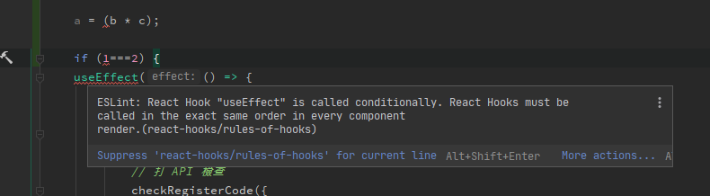
關於設定的部分可參考官網說明
在自動格式化的部份，好像沒有直接支援 ESLint 的文件格式化、修復，但是我們可以利用外部工具擴展來作到這件事情
原理就是在 IDE 透過外部呼叫，執行node.js下的 eslint，並正確給予參數即可，因此需要確定 ESLint 安裝於全域、或者是專案內，這邊的範例採用專案內安裝，且為 Windows 系統，因此路徑直接指向專案底下的/node_modules/.bin/eslint.cmd
參數則是帶入--fix <檔案路徑名稱>，這邊有 Rider 提供的變數可供使用，點選旁邊的 Icon 可查看及預覽
注意這邊檔案路徑要用雙引號包住
最後工作目錄就以專案目錄為準，因此使用$ContainRoot$
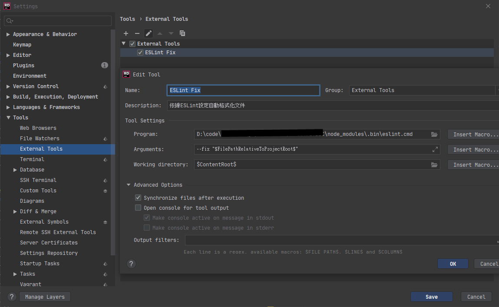
在使用上僅需要輸入熱鍵Ctrl+Shift+A，並輸入剛才設定的外部工具指令名稱eslint就可以在 Action 視窗中找到，執行該工具即可
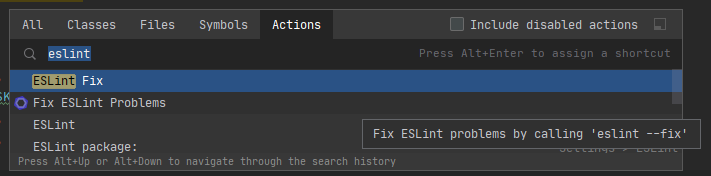
VSCode
於 VSCode 使用 ESLint 是最方便的，僅需要在 VSCode 安裝支援的套件即可
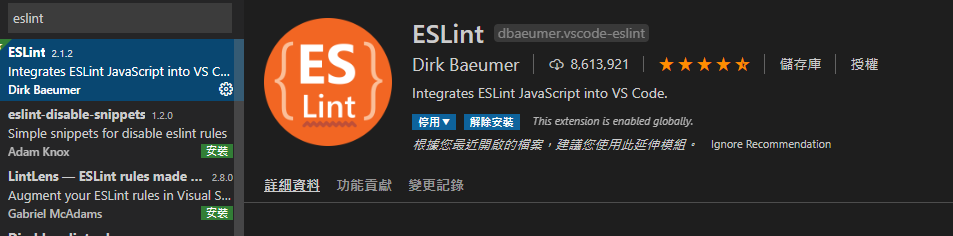
需要先安裝 VSCode 的套件 ESLint，然後就是設定儲存時自動格式化，或者是指定格式化的熱鍵
另外在外掛的設定中，有一項是儲存檔案時自動修正錯誤，一些比較簡單的錯誤可以直接幫你修掉
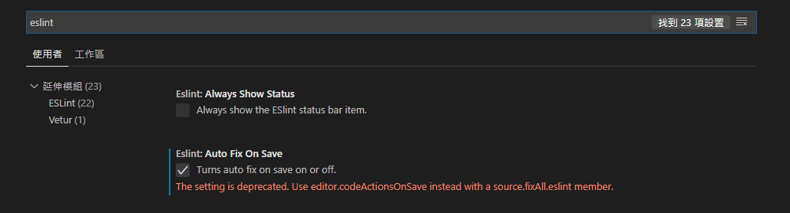
要注意的是如果有安裝多個 Formatter 外掛，如
prettier，記得停用，然後重新將格式器選擇為 ESLint
如此一來就可以即時在ＩＤＥ中看見 ESLINT 的規則已經生效，同時在輸出視窗也可以看到詳細的錯誤說明
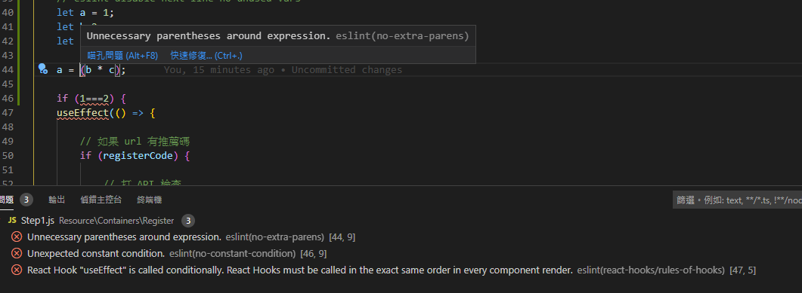
Visual Studio 2019
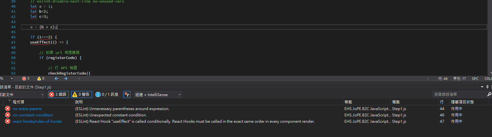
VS2019 的部份也可正確顯示錯誤，但實際測試卻發現，隨著我們變更
.eslintrc檔案內的規則，IDE 並不會跟著即時變動，必須要整個關閉 VS2019 再重新開啟後，ＩＤＥ才能夠抓到最新的規則設定，目前暫不清楚是否有別的方式可即時更新另外 VS2019 中啟用/關閉 ESLINT 功能，需要從 工具->選項，搜尋 ESLINT 即可
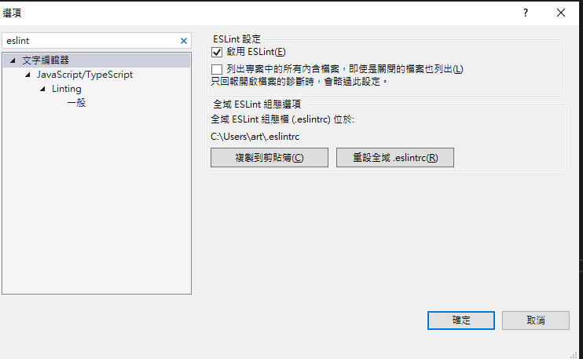
預設情況之下，VS2019 吃的設定是全域的，在使用者目錄下的.eslintrc檔案，但如果專案目錄下有設定檔，他會優先吃專案目錄內的設定
詳情可參考微軟 Github 頁面的說明
VS2019 跟 Rider 一樣，也是透過外部工具的方式去呼叫，設定方式也大同小異
透過工具->外部工具去設定
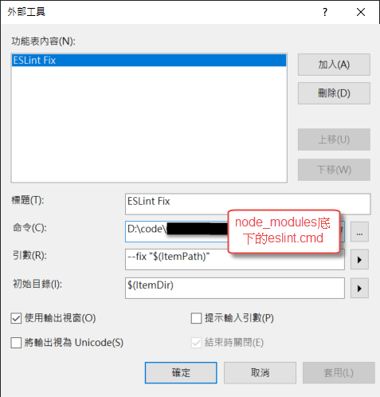
要調用的話也是從 Menu 選擇，不清楚這邊有沒有更方便的執行方式，例如熱鍵什麼的。執行結果如下
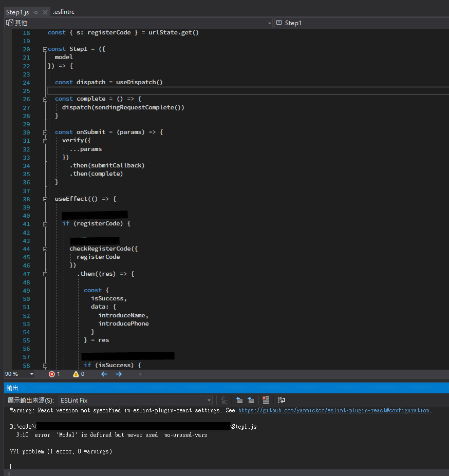
與 Git Hook 整合
在使用 Git Commit 指令之前，透過 Git Hooks 的Pre-Commit來預先檢查是否通過eslint規則的檢查，如果通過才允許 Commit。
修改 pre-commit.sample
在專案目錄.git/hooks有預設的各種 hooks，將pre-commit.sample重新命名為pre-commit，並修改內容如下
1 | #!/bin/bash |
hooks 程式碼取自：git hooks 之——pre-commit
如果出現錯誤，可參考Git pre-commit hook not running on windows
- 第一行加上宣告
#!/bin/bash - 修改
pre-commit權限：於 Git bash 介面下於 hooks 目錄執行chmod +x pre-commit
透過上述的步驟，可以在Git Commit指令的時候，觸發 pre-commit，進行eslint檢查
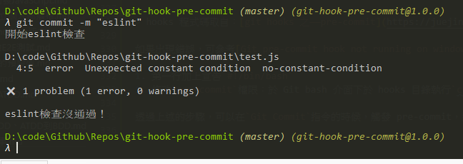
但是通過pre-commit來檢查的這個動作，我們是沒有辦法強制其他人在他們自己的 repository 做這件事情的，因為 git 的觀念就是分散式版控，大家都有自己的 repository，自己的 repository 其實不應該受到別人的 Hook 影響。
所以如果要團隊使用，建議還是另外建立一個新目錄，並請團隊成員手動執行 copy 的動作，或者是將複製指令寫在 package.json，直接執行也可以
GitHub：Git Hook Sample
使用 husky 工具來處理 git hooks
雖然上述的方法可以滿足需求，但是對於團隊開發的確是蠻不友善的，而且還要把 Git Hooks 的檔案放到 respoitory 裡面，感覺是有點怪怪的
透過 husky 這個工具可以很好的幫我們處理掉這件事情，安裝套件的時候，他會在 git hooks 目錄下建立檔案，如果已經存在的 hook 會略過
設定方式也很簡單，只要先定義好各個 hook 要做的指令，在建立好husky的設定區段即可，參考下面範例，在 Git Commit 的時候他會先執行我們設定的npm run lint，如果有錯誤的話就會拒絕 commit 了
1 | "scripts": { |
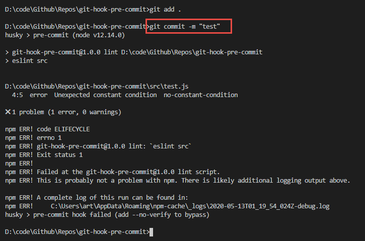
GitHub：Git Hook Sample Husky Branch
透過 lint-staged 只檢查 staged 的內容
上面的作法每一次都會檢查我們指定的所有的檔案，但我其實只想要檢查有修改的檔案就好；那麼lint-staged就可以幫我們做到這件事情
在專案根目錄下執行
1 | npx mrm lint-staged |
他會幫我們安裝好套件，並修改好 package.json 的設定
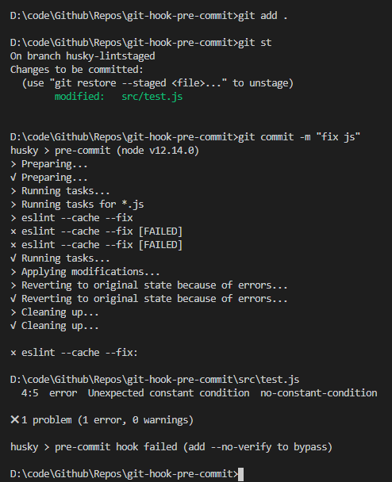
Git GUI
因為Husky基本上也是基於Git Hooks的機制來處理，所以只要是一般的 Git GUI 軟體應該都支援才是。
這邊就只有測試Fork這套軟體了，其他的軟體就不再測試囉
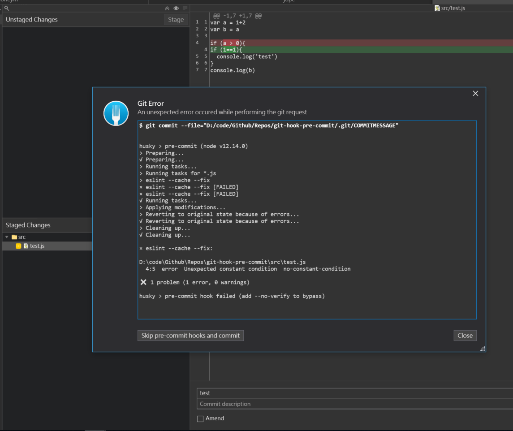